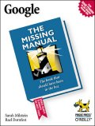

|  |
| About IR |
| Editors |
| Author instructions |
| Copyright |
| Author index |
| Subject index |
| Search |
| Reviews |
| Register |
| Home |
Milstein, Sarah and Dornfest, Rael Google: the missing manual Sebastopol, CA: Pogue Press/O'Reilly, 2004. xii, 299, [1] p. ISBN 0-596-00613-6 £13.95, $19.95
O'Reilly's 'Missing Manual' series is very useful, given the tendency for software publishers to rely upon digitised help files. However, the series' subtitle, The book that should have been in the box, is hardly appropriate for a manual on Google, which is not generally provided in a box, but as a Website. Nevertheless, a manual is a very good idea for anyone who wishes to improve his or her searching skills using this particular search engine.
The skilled information searcher will be aware of much in this book, but the lay user - that is the vast majority of users of search engines is unlikely to be so familiar with the system. It is possible, perhaps even likely, that a user may have tried one or other feature of the Advanced Search, and may have experimented with searching for images or news items, or have used the shopping search, Froogle. However, this is the tip of the iceberg and, in any event, knowing how to search using each of these systems is key to success.
The book begins with "Google 101", an introductory course to searching with Google - and if someone read only this chapter, their search strategies and search results would improve overnight. It introduces phrase searches, Boolean searching (including the use of the minus sign for 'NOT') and the use of the plus sign to force the use of what might otherwise be a stop word. If you are responsible for running information skills courses for students, give them this as essential reading.
Subsequent chapters deal with other aspects of searching: Chapter 2, covers various aspects of the advanced search page; Chapter 3 with images, news and the directory; Chapter 5, Froogle; Chapter 6, working with the Google toolbar; and Chapter 7, 'More cool Google tools', which covers, among other things, experimental tools such as WebQuotes. I'll let you try that one yourself to discover what it does. Try putting "Information Research: an international electronic journal" into the box. Once you've worked your way through all of that, you are ready to graduate as a Master of Unparalleled Googling (MUG?), but that's not all.
Part 3 consists of two chapters: Chapter 6 deals with the Google toolbar, that useful device that you can incorporate into Internet Explorer - but also pays attention to similar features in other browsers, such as Safari for the Mac, and Mozilla, Netscape and Firefox (all based on the same browser engine, Gecko) for the PC. As a confirmed Firefox user I can say that I don't miss the Google toolbar at all. Chapter 7 covers, among other things (including Google's wireless delivery for mobile access), a number of experimental features in Google - mostly not available from the home page. Try, for example, Google Webquotes: put "Information Research: an international electronic journal" into the box and see what happens.
The final section of the book is for Webmasters and gives advice on how to ensure that your site is indexed by Google and how you might work to rise up the page rankings. One of the problems with this kind of advice, of course, is that as soon as Google discovers that a particular method is being adopted to increase the probability of being listed early in the output, they put in place techniques to prevent it. This is one of the reasons, for example, why Google does not search on meta-tags.
The last chapter in this section discusses how companies can make money from Google by joining its advertising programmes - AdWords and AdSense. AdWords is the programme that allows you to create the advertisements that appear at the side of the search output - such that, if you manufacture, say, left-handed woggle spanners, then, if anyone searches for that item, your ad will appear on the output page, along with those from any other manufacturer who has bought into the programme.
AdSense works the other way round - it's a programme that enables you to used part of your Website as advertising space, with Google supplying the ads and paying you (undisclosed amounts) for the privilege, targeted at people who might be expected to use your site. Clearly, the more focused your pages, the easier it will be for Google to provide the appropriate ads. Perhaps I should sign up Information Research. What would your response be to ads on the top page?
Finally, there is a brief appendix, 'The Google World Wide Web', which lists sites that use Google such as Freshgoo, which allows you to search for the sites added by Googlewithin a particular time-frame. (Try searching for "information behaviour" on sites added within the past six months.) The appendix also lists sites that discuss Google- the Googleobsessives, one might say. I like Googlewhack, and the totally zany Google-watch, but you might find Elgoog more useful. However, try out the Web ranking tool at Google-watch.
This is a very useful manual and I learned a lot from it, although I'm no novice at using the search engine. Highly recommended.
Professor T.D. Wilson
Editor-in-Chief
July 2004
How to cite this review
Wilson, T.D. (2004). Review of: Google: the missing manual Sebastopol, CA: Pogue Press/O'Reilly, 2004. Information Research, 9(4), review no. R139 [Available at: http://informationr.net/ir/reviews/revs139.html]